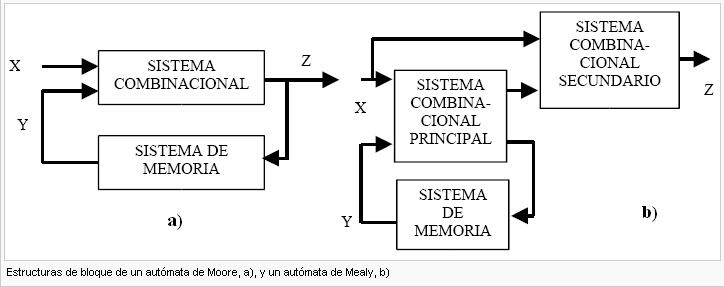
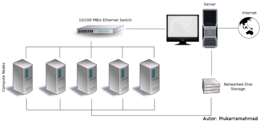

Es una forma de cómputo en la que muchas instrucciones se ejecutan simultáneamente, operando sobre el principio de que problemas grandes, a menudo se pueden dividir en unos más pequeños, que luego son resueltos simultáneamente.
• Permite ejecutar problemas de un orden y complejidad mayor.
• Permite la ejecución de varias instrucciones en simultáneo.
• Permite ejecutar el código de manera más rápida.
• Permite dividir una tarea en partes independientes.
• Mayor consumo de energía.
• Mayor dificultad a la hora de escribir programas.
• Altos costos por producción y mantenimiento.
• Retardos ocasionados por comunicación entre tareas.

Un único procesador se encarga de gestionar simultáneamente un algoritmo como una única fuente de datos. Ejecuta las instrucciones secuencialmente y puede o no ser capaz de realizar procesamiento en paralelo, dependiendo de su configuración.
Los procesadores múltiples son estándar en las computadoras que utilizan Instrucción Múltiple, Datos Únicos. Pueden realizar simultáneamente muchas operaciones en el mismo lote de datos. La cantidad de operaciones se ve afectada por la cantidad de procesadores disponibles.
Las PC que utilizan esta arquitectura, tienen múltiples procesadores que ejecutan instrucciones idénticas. Sin embargo, cada procesador proporciona las instrucciones con su colección única de datos.
Se caracterizan por la presencia de múltiples procesadores y cada uno de ellos es capaz de aceptar de forma independiente su flujo de instrucciones. Este tipo de computadoras tienen muchos procesadores y, además, cada CPU extrae datos de un flujo de datos diferente.
Cada uno de sus procesadores es responsable de ejecutar las mismas instrucciones. Es una programación de paso de mensajes utilizada en sistemas informáticos de memoria distribuida.
Se crea el Procesamiento Masivo en Paralelo para gestionar la ejecución coordinada de las operaciones del programa por parte de numerosos procesadores. Dado que cada CPU utiliza su sistema operativo y su memoria, este procesamiento coordinado se puede aplicar a diferentes secciones del programa.
Las computadoras secuenciales procesan instrucciones de manera secuencial. En otras palabras, cada instrucción se ejecuta una tras otra. Esta arquitectura, se basa en el modelo de John Von Newman, que cuenta con componentes tales como CPU, memoria principal, bus y mecanismo de sincronización.
• Simplicidad: Estos sistemas son más fáciles de diseñar y entender. Siguen un flujo lógico paso a paso, lo que facilita su implementación.
• Menos problemas de control: La ejecución secuencial reduce la complejidad de los problemas de control, como la gestión de conflictos en el acceso a recursos compartidos.
• Facilidad de depuración: En comparación con las computadoras más complejas, las secuenciales son más fáciles de depurar y rastrear errores.

Es un identificador para una localización de memoria con la cual un programa informático o un dispositivo de hardware pueden almacenar un dato para su posterior reutilización. Este direccionamiento puede considerarse desde dos puntos de vista:
• Físico: Son los medios electrónicos usados en la PC para acceder a las posiciones de memoria.
• Lógico: Se refiere a la forma en que se expresan y guardan las direcciones.
El sistema utilizado para representar las direcciones de memoria en el texto escrito, es el hexadecimal.

Es aquel tipo de memorias que puede ser accedida por múltiples programas, ya sea para comunicarse entre ellos o para evitar copias redundantes. Es un modo eficaz de pasar datos entre aplicaciones.
Hace referencia a los computadores que te permiten abrir programas en más de una CPU, por lo que puede ejecutar simultáneamente varios hilos pertenecientes a un mismo proceso o bien a procesos diferentes.
Estas computadoras cuentan con problemas de diseño, derivados de que dos programas pueden ejecutarse simultáneamente y pueden interferir entre sí.
Existen 3 arquitecturas que resuelven estos problemas.
Todos los procesadores comparten toda la memoria de forma simétrica.
Cada procesador tiene acceso y control exclusivo a una parte de la memoria.
Cada procesador tiene acceso y control exclusivo a una parte de la memoria caché.
Son redes que pueden cambiar la topología de comunicación durante la ejecución de los programas o entre dos ejecuciones de programas.
Se refiere a un tipo de red donde múltiples dispositivos comparten un único canal de comunicación para enviar datos. Varios dispositivos, como computadoras, servidores, impresoras, etc., están conectados a través de un medio compartido, como un cable Ethernet o una red inalámbrica.

La comunicación se realiza entre un host origen y uno destino. La transmisión de datos se realiza a través de una red de nodos intermedios. El proceso consta de tres fases: establecimiento de la conexión, transferencia de la información y liberación de la conexión.
Son utilizadas para comunicaciones a largas distancias, los nodos no se preocupan del contenido de los datos y los dispositivos finales son estaciones.

Es un sistema de procesamiento paralelo o distribuido. Consta de un conjunto de computadoras independientes, interconectadas entre sí, de tal manera que funcionan como un solo recurso computacional.
La Memoria Distribuida Compartida (DSM) es un tipo de implementación hardware y software, en la que cada nodo de un cluster tiene acceso a una amplia memoria compartida que se añade a la memoria limitada privada, no compartida, propia de cada nodo.
Cuenta con diversas ventajas:
• Tiene mejor rendimiento que un sistema centralizado.
• Cualquier fallo que se presente en un nodo no afecta gravemente a los demás.
• Si un nodo falla, los datos quedan guardados en los demás nodos.
También, tiene desventajas:
• Requieren mayor nivel de planificación, monitoreo y mantenimiento.
• Mayor costo de implementación.
• El rendimiento de todo el sistema depende del rendimiento de la red.

Una red estática es una red cuya topología queda definida de manera definitiva y estable durante la construcción de la máquina paralela. La red simplemente une los diversos elementos de acuerdo a una configuración dada.
Emplean enlaces directos fijos entre los nodos. Una vez fabricado, estos nodos son difíciles de cambiar por lo que la escalabilidad de estas topologías es baja.
• Arquitecturas multi core y multithreading en multi core.
• Diseño y optimización de algoritmos.

• Patrones de diseño de algoritmos paralelos.

• Laboratorios remotos para el acceso transparente a recursos de cómputo paralelo.